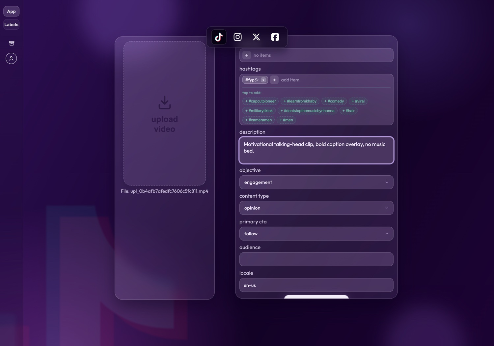
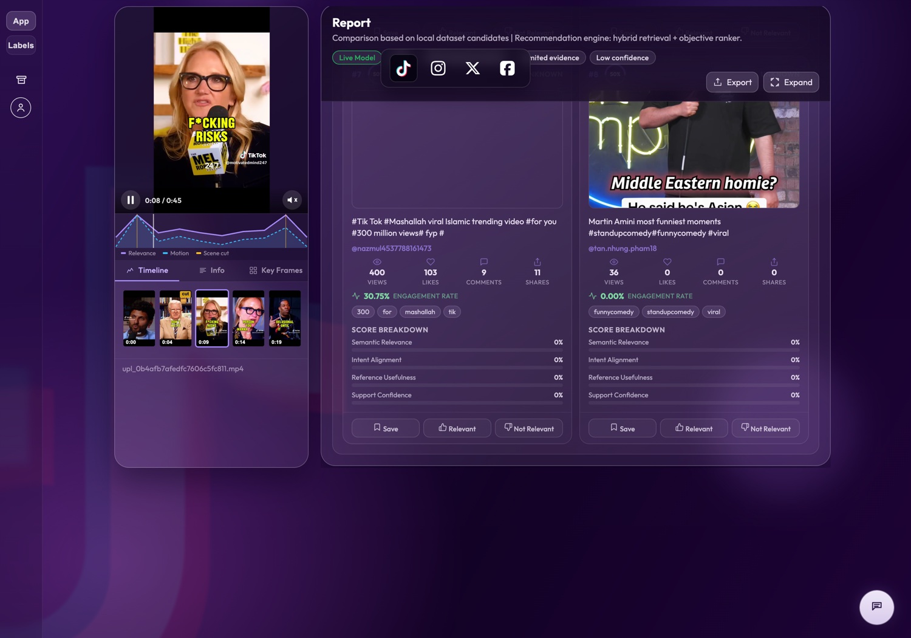
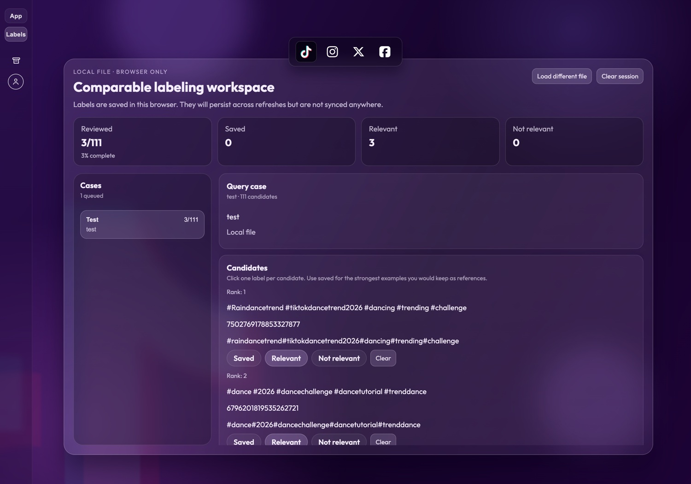

Machine learning — Feb to May 2026
TikTok Recommendation & Creator Analytics
This started as an experimentation scaffold and became a recommendation platform: canonical data contracts, a training datamart with point-in-time safeguards, a learned ranker, a FastAPI serving layer, and a control plane that decides when the model should be retrained.
- Role
- Full-stack and modelling contributor
- My contribution
- ~6,900 lines, 37 commits, 119 unit tests
- System size
- ~40,000 lines
- Stack
- Python, NumPy, FastAPI, TypeScript, React
What I built
- A LambdaRank learning-to-rank optimiser written against L-BFGS-B and optimised directly for NDCG@10, rather than training a pointwise regressor and hoping the ordering follows.
- Bayesian hyperparameter search over a Gaussian Process, so the search spends its budget where the posterior says improvement is likely instead of sampling a grid.
- A REINFORCE content policy in pure NumPy — no deep learning framework, which made the gradient estimator something you can read and verify line by line.
- Retrieval that evolved from a TF-IDF baseline to fine-tuned sentence-transformer embeddings, with a fine-tuned TinyLlama-1.1B (PEFT LoRA) in the loop.
- Trajectory-aware ranking signals and a local labelling tool, so relevance judgements could be produced and inspected without leaving the repository.
Does the ranker earn its place?
The honest way to test a learned ranker is against the retrieval stage alone. If the extra machinery does not beat plain retrieval, it is cost without benefit. Evaluated over 89 held-out test queries against a candidate pool of 620 rows:
| Pass | NDCG@5 | NDCG@10 | NDCG@20 | Recall@20 |
|---|---|---|---|---|
| Retrieval only | 0.303 | 0.368 | 0.431 | 0.647 |
| Full pipeline | 0.429 | 0.478 | 0.555 | 0.629 |
Ranking quality improves substantially at every cutoff — NDCG@10 rises from 0.368 to 0.478. Recall@20 dips slightly, which is the expected trade: the ranker is pulling relevant items up the list rather than widening the net. For a feed, where almost nobody scrolls to position twenty, that is the trade you want.
How the pipeline is shaped
The part I find most interesting is not the model, it is the discipline around it. Raw data is normalised into a canonical contract bundle before anything touches it. That bundle is turned into a training datamart with point-in-time and label-horizon safeguards, so a feature computed for a training row cannot accidentally see the future.
raw JSONL → canonical contract bundle
→ training datamart (point-in-time safe)
→ feature fabric + comment intelligence
→ recommender artifacts (versioned bundle)
→ FastAPI serving → React frontend + Node gateway
→ control plane: attribution, drift, retrain gateThe serving layer loads the latest compatible artifact bundle, so a model trained against a different contract cannot be served by accident. Control-plane jobs attribute outcomes, analyse experiments, monitor drift and gate retraining.
The product around the model
A creator uploads a video and describes what they are trying to do with it. The service extracts multimodal features, retrieves comparable videos from the corpus, ranks them against the stated objective, and returns a report the creator can act on.



The video panel is not decoration. The relevance, motion and scene-cut traces under the player, and the extracted key frames, are the multimodal features the ranker actually consumes, shown back to the creator so a recommendation can be argued with.
Where the labels come from
A learned ranker needs relevance judgements, and judgements need somewhere to be made. The repository carries its own labelling tool so a held-out split can be reviewed without standing up any infrastructure.

These screens are the real application, captured with the Python recommender service serving a trained artifact bundle and the Node gateway in front of it. The uploaded video and every comparable shown come from the project's own corpus.